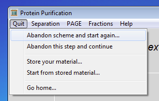
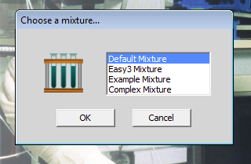
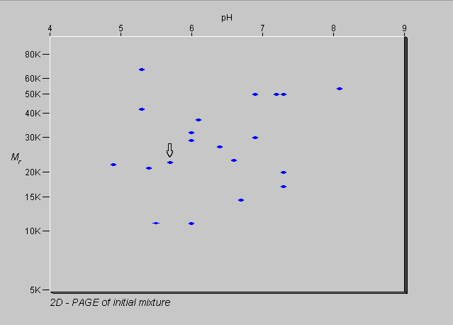

back to the start
previous exercise
next exercise
Exercise 5 of 6
Purifying a protein from a more complex mixture
If you have purified protein 2 from the simple mixture of three proteins, you are ready to try to purify a protein from a more complex mixture of twenty proteins.

Click on the Quit menu and select Abandon scheme and start again.

Load the mixture Default_Mixture.
This is a mixture of 20 proteins.

You are going to try to purify protein 10.


If you were to examine the mixture by 2D-electrophoresis, it would look like this. The spot corresponding to protein 10 is indicated with an arrow. Bear in mind that the molecular weights given are subunit molecular weights. Nonetheless, the information in this gel might help you think of a purification scheme for this protein. Try it out. Experiment. If a particular method doesn't work, try to understand why and then try something different. Remember that you can only abandon a step if you have not yet pooled fractions, otherwise you will have to abandon the scheme and reload the mixture.
It should be possible to purify protein 10 in no more than two steps. If you can do that, then try to purify any of the other proteins in the mixture. Some are very easy to purify, others are quite difficult. You can use any of the separation methods available, but be systematic and realistic. Keep an eye on the cost! The program is monitoring what you do and will step in to stop you if it isn't happy with what you have done. Good luck!
By now you should be quite familiar with the program, how to load different mixtures and how to use the methods available. Before you finish, try this last experiment.